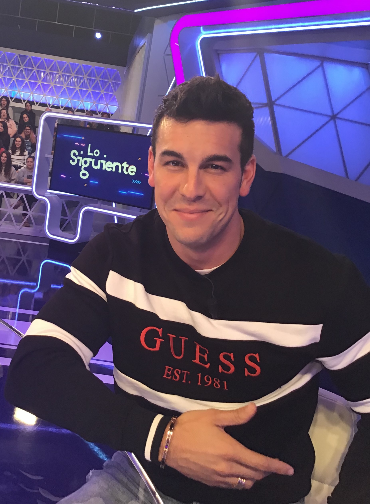
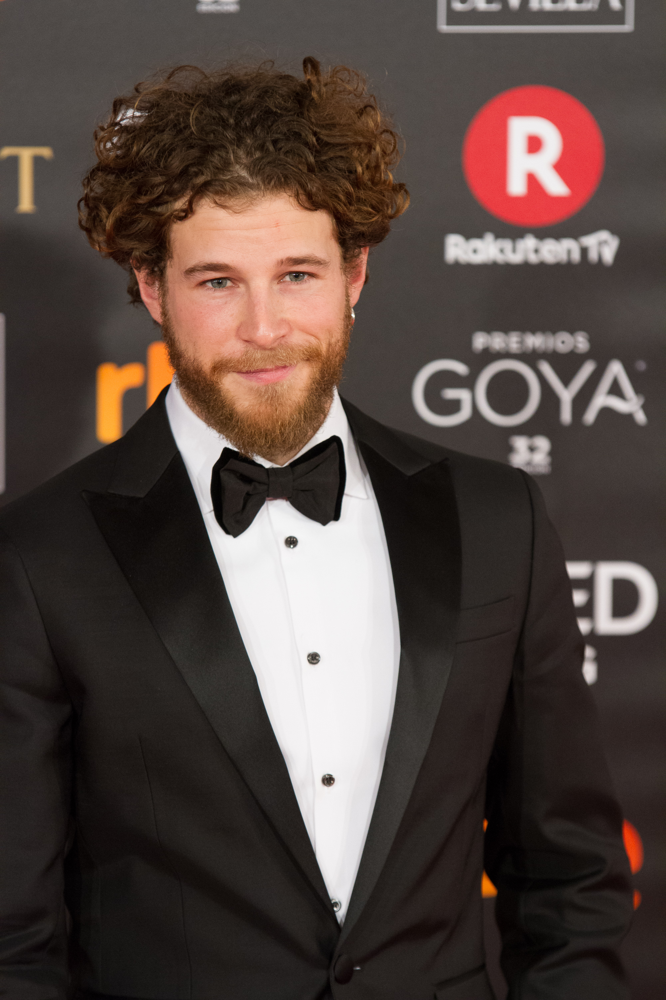
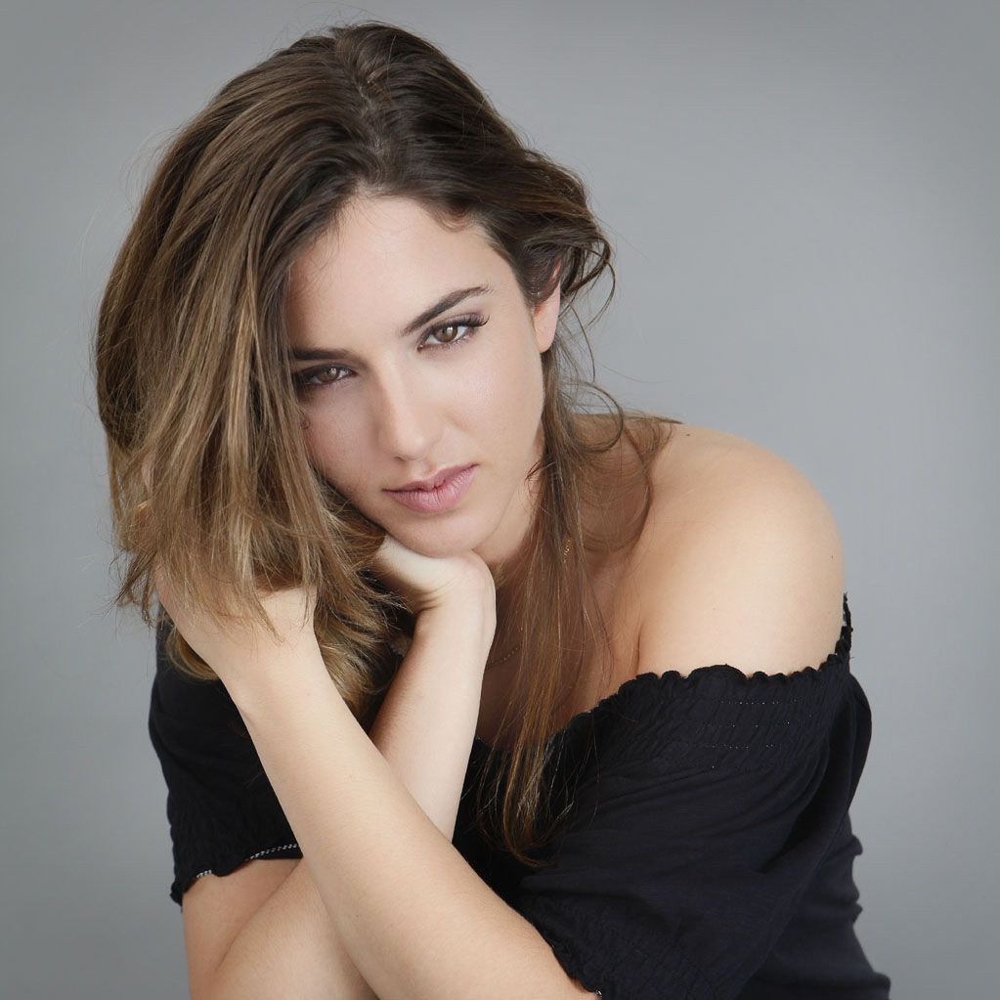
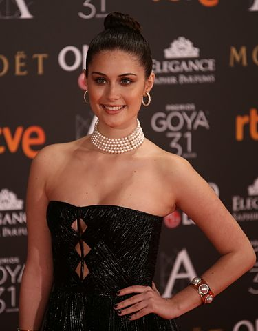
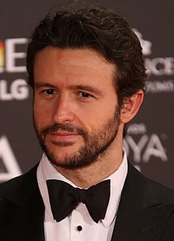
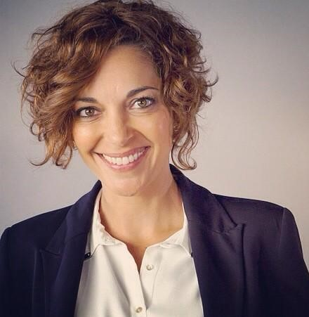
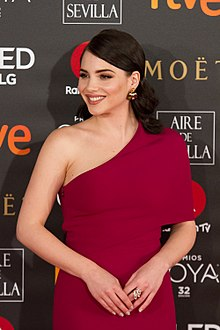

Reparto

Mario Casas
Hugo «Hache» Olivera
Maria Valverde
Bárbara «Babi» Alcázar

Álvaro Cervantes
Pollo

Marina Salas
Katina Herreruela
Luis Fernández
Chino

Nerea Camacho
Daniela «Dani» Alcázar

Diego Martín
Alejandro «Alex» Olivera

Cristina Plazas
Rafaela (madre de Babi)
Jordi Bosch
Claudio Alcázar (padre de Babi)

Andrea Duro
Mara
“Es hora de volver a casa. Es hora de volver a empezar, lentamente, sin dar demasiadas sacudidas al motor. Sin darle demasiadas vueltas. Con una única pregunta: ¿Volveré a estar alguna vez allí arriba, en ese lugar tan difícil de alcanzar? Allí, donde todo resulta más hermoso. Desgraciadamente, en ese mismo instante, ya sabe la respuesta.” Frase 3MSC
Copyright © 2022 Diana Katalina Gil Rubio-"Producto desarrollado para fines educativos del Servicio Nacional de Aprendizaje - SENA"